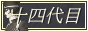
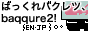
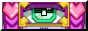
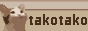
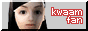
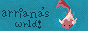
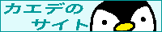
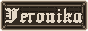
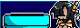
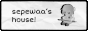

ネオ日本語ウェブリング
Neo-Nihongo Webring
コードの更新をお願い致します。ウェブリングボタンの機能性を保つため、現時点でコードが最新でない（または見当たらない）方は一時的にリングから外しています。確認次第再追加しますので更新の際はご連絡ください。
Please update the webring widget with the new code. To keep the webring functional, sites with the old code (or no code) have been temporarily removed from the ring list. Please let me know when you update and I will add the link back!
ようこそ！
こちらのウェブリングは様々な日本語話者や日本語学習者を繋げる、同盟のようなものです。
- 母語話者の方
- 第二、第三言語の方
- 日本語を学習している方
コンセプトとしてはNeocitiesサイトの交流を想定していますが、Neocities外でも個人サイトであれば参加可能です。
サイトに日本語コンテンツがあった方が嬉しいですが必須ではありません。
ようこそ！
Welcome to the Neo-Nihongo Webring, a webring for Japanese speakers and learners of all kinds!
- Native speakers
- Fluent speakers (L2, L3, etc.)
- Learners (beginner, intermediate, etc.)
The main concept is to connect Neocities users, but non-Neocities sites are also welcome to join.
Having Japanese content on your website is greatly encouraged but not required.
目次
Contents
参加方法
How to Join
注意事項
- 悪意や攻撃性のある内容のサイトはお断りします。
- BOTやスパム防止のため、白紙やテンプレートのみのようなサイトは登録しかねます。
登録方法は2種類ありますので、好きな方をお選びください。
Warnings
- Sites with malicious content such as hate speech are not allowed.
- To prevent bots and spam, I cannot let in blank or barebones sites.
There are two ways to join:
① 登録フォーム
① Registration Form
フォームを開くOpen here
② Eメール
こちらのテキストエリアの必要項目を記入し、cerealandchoccymilk☆icloud・com宛にお送りください。
＊マークの項目は必須項目です。項目の詳しい説明は上のフォームをご覧ください。
件名：ネオ日本語ウェブリング
いずれの方法でも、登録完了の際はEメールにてご連絡致します。
また、登録後にリンク切れ等を見つけた際には確認のEメールをお送りします。
② Email
Fill out the text box below and send it to cerealandchoccymilk☆icloud・com.
Questions marked with an asterisk * are required. For more info, see the question descriptions on the registration form.
Subject: Neo-Nihongo Webring
Regardless of the registration method, I will send you an email once you’ve been added.
If I find a dead or malfunctioning link in the webring, I will also send an email to check in.
- 情報修正・ウェブリング退会（クリックで開く）
◆ 登録内容修正
登録時に使ったメールアドレスで上記のアドレスまでご連絡ください。
件名「ネオ日本語ウェブリング」、本文1行目「修正希望」で、修正したい項目をご記入ください。◆ 退会
登録時に使ったメールアドレスで上記のアドレスまでご連絡ください。
件名「ネオ日本語ウェブリング」、本文1行目「退会希望」で、もし可能であれば退会理由をご記入ください。
（「退会希望」のみでも勿論OKです）
- Updating info and leaving the webring (Click to open)
◆ Updating member info
Send in an email from the address you used to register, with the subject "Neo-Nihongo Webring."
With "Update request" as the first line, proceed to fill out the part(s) you want to update.◆ Leaving the webring
Send in an email from the address you used to register, with the subject "Neo-Nihongo Webring."
Just the line "Deletion request" is enough, but it would be helpful if you could provide the reason.
1週間以上返事がない場合、お手数ですがNeocitiesプロフィールやゲストブックまでご連絡ください。（Eメール誤作動の場合を考慮）
If you don't get a reply after a week, please contact me via my Neocities profile or guestbook, in case the email itself isn't working.
コード
Codes
使い方
テキストエリア内のコードを任意のページにコピペしてください。
見つけやすいページに配置していただけると嬉しいです。
（入り口ページ、メインページ、またはメインページから飛べるリンク集ページなど）
現在2種類から選べます。
How to use
Copy-paste the code in the text area onto a page of your choosing.
It would be helpful if it were placed on a page that is easy to navigate to.
(e.g. entry page, main index, or a dedicated webrings page linked on a sidebar)
There are currently two variations available.
テキストver.
Text-based version
画像ver.
Image-based version

名簿
Member List
登録サイト数：Site count: x件
（敬称略）

cereal and choccy milk
Choccy/ちょき- 日米ハーフのウェブリング創設者。英語の方では和英翻訳、コレクション、拙い文章などを晒しており、中庭（日本語）では主にカービィの二次創作を載せています。// Japanese-American owner of this webring. On the English side I post JA-EN translations, collections, and small articles. In the Courtyard (Japanese), I mostly post Kirby fanart.

森の小川でサーフィン (Surfin' in a Forest Stream)
- ちょき管理人のもう一つのサイト。「ゲゲゲの鬼太郎」の二次創作サイトで、内容は全て日本語です。// Choccy's second website, a "Gegege no Kitaro" fanart site. Contents are 100% Japanese.

juuyondaime (十四代目)
- 世界一遅い日本語学習者。「デビルサマナー葛葉ライドウ」にずいぶんドハマりしています。// World's slowest Japanese student. Woefully obsessed with the Devil Summoner: Raidou Kuzunoha duology.

ねおたうん
みかん- 日本の歴史的地名について探究したり、今シーズンのスワローズの弱さに舌を巻いたりしています。管理人は日本語だけはギリ使えます。拙い言葉ばかりですが、皆様と種々の感動を分かち合えたら良いなと思っています。
足許の歴史に思いを馳せたり、スワローズを応援（但し勝敗は考慮しないものとする）したりしてみませんか？
このサイトはセントラルリーグへの指名打者制導入に反対しています。

sanji.org
サンジロプス- 「sanji.org」アニメ☆音楽☆バクチク // sanji.org - anime, music and 50 year old men

紅天狗 (Benitengu)
Worm- 日系アメリカ人の私的サイトです。基本的に趣味（ホラー、鳥、虫、エビ飼育、SM、冷戦時代のアメリカ文化など）について書いてます。

Nova's Corner (ノヴァのコーナー)
Nova- Personal website where I post my art and talk about stuff lol

JSAniken's Creative Storage (JSAniken創作倉庫)
JS- 日米ハーフのアニメーターです。サイトでは主に趣味で作ったアニメや日常のブログなどを書いています。英語メインですが気分によって日本語でもブログを書くと思うのでよろしくお願いします。// I am a Japanese/American working as an animator. My blog focuses on the animations I've made in my free time, along with blogs about my daily life. It's mainly in English but I may write in Japanese too depending on my mood.

renyoi (レンよい)
ren- a personal website full of shrines, colorful design, and features basically unusable on mobile. // 興味があることが祝うページが多くて、カラフルなデザインでまったくモバイルで使えない特徴がある個人的なサイト。

canworld
baqqure2- とある学生の拙ねえ自己満ウェブサイト。// self indulgent website of a teen

100%health
yuinoid- yuinoid/いど子 の個人サイトです。イラストギャラリーや不定期更新の日記、分散SNSを中心としたインターネット史の年表を主なコンテンツとしています。// Personal site of yuinoid/いど子. Features illustration galleries, irregularly updated diary entries, and a timeline of internet history focusing on decentralized social networks.

あごわーるど (Agoworld)
げを- 日本人です。“テキストサイト”の復興を夢見てサイトを開設しました。英語はまだ学習中。皆さんと交流してより学べたら良いなと思います。// I am Japanese. My dream is to revive the "Text site" that was once popular in Japan. I'm still studying English, so I hope to learn through interacting with you all!

TWO-TRIPLE-ZERO (ツー トリプル・ゼロ)
Heap- A humble personal site all about me, my niche interests, and my creative work - mostly featuring Original Characters and Gijinkas of my favorite songs. I'm also currently learning Japanese, little by little!

キミを迎えたくて
おがあらつ- 平沢進のファンサイトになりつつある雑多で楽しい？サイトです。

ジユヲタプロジェクト (ziyuwota project)
さくしゃ/sakusya- 日本人です。英語は全くできないけど、neocitiesの雰囲気がいいな〜って思ってサイト作ってます。
絵・漫画を描くことと平成初期のコンテンツが好き。

Mimineko12のお部屋
Mimineko12- ガラケーサイトや初期のアメーバブログを参考に、平成中期の雰囲気を感じるサイトを作りました。// Inspired by flip phone sites and early Ameba Blog, this site recreates Japan’s mid-Heisei vibe.

Stillness Graveyard
Aster- 自己表現と現実逃避を楽しむために作られた小さな居場所。

milk-tea (miruku-tea)
tasha- tasha's personal site ☆

Smoko's Webzone (スモコのウェブゾーン)
Elly (エリ)- 僕の名前はエリです。ジェンダークィアのトランスジェンダーで33歳です。アメリカ人のアニメとコミックスオタクです。大学の時に日本語を勉強し始めました。年月を重ねるにつれてだんだん忘れてしまいました。でも、最近また学習しています。僕のサイトはまだ建設中だけど、訪れて下さい！// My name is Elly. I'm a 33-year-old genderqueer trans person and an American anime/comics geek. I began studying Japanese when I was in college. After graduation I slowly began forgetting it. However, I've recently started practicing again. My website is still under construction, but please give it a visit!

bokuwatetsuo (僕は鉄雄)
tetsuo- this is my personal website where i post my works and talk about AKIRA a lot.

ScrapSite (スクラープ サイト)
BigBanana- Personal website sharing my life that also hosts my writing.

Sweet Cherries
Estelle- A pink and cute website where I learn how to code and share my interests and thoughts to the web :)

Slashdiv
504- I'm a beginner-intermediate learner! This site is my personal site that I use to show my art, projects, thoughts, link recommendations. I also have a collection of resources for learning Japanese.

Extension of You
Imbir- I am the morning sun come to vanquish this horrible night.

Karasu Shima (烏島/カラスシマ)
Karasu- A personal website by a guy whos lived in Japan for 3 years and loves creating things!

iDestyKK (利恵)
iDestyKK- A Vietnamese/Italian girl's take on a personal indie website.

でむごぜちゃん✩公式サイト (DEMGOZÉ ✩ Official Website)
でむごぜちゃん- メイドカフェをテーマにしたかわいいサイト♡ // Cute site with a maid cafe theme♡

たこのサイト！ (takotako)
たこたこ- html初心者のがきががんばって発展させるサイト

Watakoii Chiquito
- My site is a pinky web made to share my likes and have something to do as a hobbie :3!!!!

My Nekos' World
†漆黒の猫†- うちの猫たちを紹介するホムペです！

Angel Eye Springs
Amy- A hobbyist's personal site. I passed the N2 level of the JLPT in 2023.

likematchesくコ:彡
- A craft blog mainly focused on cross stitch and kogin embroidery.

kwaamfan (クワーム ファン)
melissa- a personal website and blog of a woman who loves learning thai and japanese, video games, knitting, and technology

Indie Tsushin (インディー通信)
Nice Gear Games- Highlighting indie games and developers from Japan!

arriana (エリアナ)
- 日本に住んでいるアメリカ人の個人ウェブサイトです。ビデオゲームやかわいいものが大好き！日本語は中級くらいです。//
The personal site of an American working and living in Japan. Loves video games and all things cute. Intermediate Japanese speaker, studying for the N3 exam.
NOTE: Profile icon leads to blog page, not main site

カエデのサイト
カエデ- 基本毎日更新の日記を書いたりやったゲームの感想を書いたりしているサイトです。

the nameless archive (名無しのアーカイブ)
index- personal site of a chaos creature mostly to store my creations & thoughts. webpage design is part of the content. what i do varies with the amount of clouds outside each day. actually finally really trying to learn japanese this time ;w;;;

フラワーガーデン (Flower Garden)
翔/Sho- 二次創作(トリコのカプなし&ココマ)と日記が中心。アニメ、漫画、ゲームが好き。漫画の練習中なので気軽に見てください♪日本語メインです。// Diary and, Fan fictions Coco x Komatsu, non-cp(Toriko) are main. I love personal website, manga, anime, game. Japanese main, you can use translation tool.

Veronika's Skin (ベロニカズ・スキン)
Veronika- アート、日記、その他さまざまな趣味に関する個人ウェブサイト。// A personal website for my art, journal, and various interests.

SKYROCKET (sukairokketo)
Yuusukee- ハロー！ ニュージーと日本のハーフ方の私的サイトです。ほぼ内容は僕の大学の旅を描いています。// Hello ! This is an personal website of an Half Japanese-Kiwi Engineering student suffering...

I'mEpix's DS (アイムエピクスのDS)
Epix- personal website where i nerd out about about my favorite things, and where i share language learning progress

GikaAyumi (ギカ亜由美)
Ayumi- A personal site by a Nipo-Brazilian (I'm the first mixed-race person in my Japanese family), learning Japanese to communicate better with my family. My site is focused on art, ocs, and my personal passions!

Aetherway
- The Aetherway connects people, moments, and places across time and space. It weaves the fabric of existence and shapes the unseen bonds that link the universe together.

sepewaa's house (セペワーのハウス)
sepelathons- hello!! my house is filled with my interests and my squishy everyday!! the interests listed are pen spinning, keitais, keyboards, and nihongo!!! // こんにちは！！家のは、sepewaaの好きなものや、もちもちした日常でいっぱいです！！好きなものは、ペン回し、ガラホ、キーボード、そして日本語です！！！
Stray Love (ストレイ・ラブ)
Alice- テレビ、音楽、日本の曲の歌詞が大好きな女のサイト。// Personal site of a woman who adores TV, music, and Japanese songwriting.
サイト名 (別名)
管理人- サイト説明
最終更新：Last update: 2026/08/16
Discord
ネオ日本語Discord
「ねおたうん」のみかんさんがDiscordサーバーを立ち上げてくださりました。
サイト関係や日本語学習の話題だけではなく、メンバー同士の交流を目的としたゆる〜いサーバーです。
興味のある方は上記のウェブリング管理人、またはみかんさんのメールアドレス（kintetsu-nippombashi☆protonmail・com）までご連絡ください。
Neo-Nihongo Discord
Mikan-san (webmaster of Neotown) has created a Discord server for us!
It's not only for talking about webmastery and Japanese, but also casual conversiation and making friends.
For the invite link, please contact the webring owner via the email above, or Mikan-san's email (kintetsu-nippombashi☆protonmail・com).
更新履歴 Changelog
- 2025/12/20
- 不具合のためウェブリングツールをwebri.ngからonionring方式に変更
- Changed webring management from webri.ng to onionring due to technical issues.
- 2025/10/07
- 登録フォームをNotionからTallyに移行、iFrame設定を変え再導入
- Changed registration form from Notion to Tally, reimplemented iFrame with different settings
- 2025/09/25
- 和英同時表示から切替方式に変更、読み込み遅延防止のため登録フォームのiFrameを削除
- Language toggle buttons created in stead of displaying both languages at once, removed registration form iFrame due to excessive loading delay
- 2025/09/16
- Neocitiesプロフリンク（+登録フォーム欄）追加、名簿の見た目を調整
- Added Neocities profile links (+field in form), adjusted member list appearance
- 2025/08/20
- Discord情報追加
- Discord info added
- 2025/05/31
- ウェブリング始動、ウィジェット2種を公開
- Opened webring, added 2 widgets
- 2025/05/28
- 「参加方法」追加
- "How to join" added
- 2025/05/28
- ページ作成
- Page created